指令集简介
-
Lua虚拟机采用定长指令,每条指令占4个字节 -
Lua 5.4将操作码扩展到了第7位总共能够容纳128条指令,现在定义了83条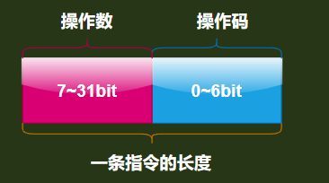
操作数编码模式一共5中
enum OpMode {iABC, iABx, iAsBx, iAx, isJ};

| 符号 | 作用 |
|---|---|
| i | instruction 指令的意思 |
| A | 指令1参数 一般用作目标寄存器索引 |
| B | 指令2参数 既可以是寄存器索引,也可以是常量池索引 |
| C | 指令3参数 既可以是寄存器索引,也可以是常量池索引 |
| k | 一bit标志位 比如 标志位k为1表示常量池索引,否则表示寄存器索引 |
| x | extended 扩展的意思 |
| s | signed 符号 该参数应该被解释为有符号整数 |
| sJ | 表示跳转的PC偏移量 |
| sBx | sbx表示的是一个有符号的数,也就是sbx可以是负数 |
| bx | bx是一个无符号整数 |
| Ax | 做参数扩展使用,只能和别的指令搭配使用,比如LOADKX指令 |
基于CPU寄存器架构
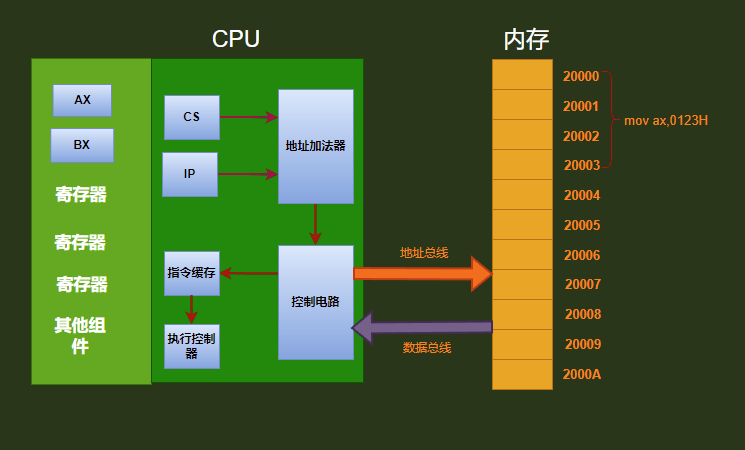
从上面我们可以看出这些寄存器组件是和CPU捆绑在一块的,所以跨平台和兼容性就很差,但是因为是直接在CPU上直接对数据进行运算,所以速度很快
Lua虚拟机栈
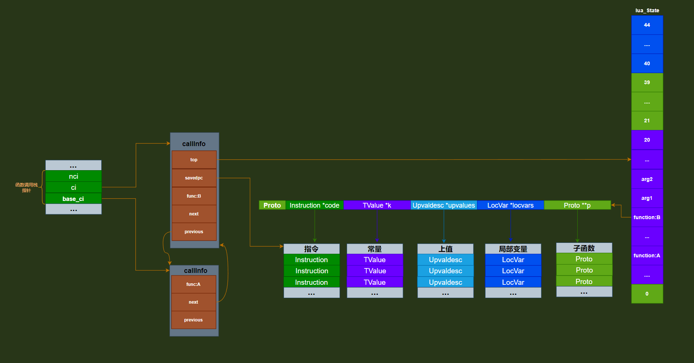
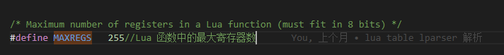
-
从上图中我们能看出
Lua的寄存器是基于虚拟机的,但是这些寄存器和CPU寄存器是不一样的东西和CPU是没有任何关联,如果有关联的话,因为CPU的每个平台使用的架构不一样,会导致Lua失去移植和兼容性,所以Lua使用了一个栈来保存这些寄存器,同时每一个运行的函数都有自己的活动数据,单独的寄存器数量,同时在Lua5.4.4中也规定了每个函数最大的寄存器个数是255个 -
也可以看出我们的指令其实都是存在了
Proto结构体里面的code字段 -
由于
Lua有如此大量的寄存器,所以在预编译时能够将所有的局部变量存放到寄存器中,因为寄存器数据是在栈中,upvalue变量存放在链表中,global变量存放在全局的表中也可以说是在env表中效率从大到小:
local > upvalue > global -
所以一般都会使用如下面的定义方式来提高效率,毕竟这样做省去调用时再去全局表中,上值链表中查找的开销,同时生成的指令也会减少很多
local sin = math.sin local table_remove_f = table_t.remove local table_insert_f = table_t.insert local table_unpack_f = table_t.unpack
看指令前的一些符号解释
| 符号 | 解释 |
|---|---|
| R(x) | 一定是寄存器索引 一定会访问Lua栈 |
| Kst(x) | 一定是常量索引 一定会访问常量表 |
| RK(x) | 可能是常量索引也有可能是寄存器索引,取决于索引k的类型 |
| 立即数 | 立即数就是写在指令里的常数.用CPU架构下的mov指令举例子,mov 12, %rax那么这个 12 就在操作语句里.那么 12 相当于指令里的立即数,lua中的指令也类似,直接从指令参数中加载的整数和浮点数就是立即数 |
| PC | 程序指令计数器,主要是为了计算指令的相对位置用的 |
| Upvalue[n] | 下标索引为n的上值 |
iABC操作数模式
首先这个指令和lua5.4版本之前的lua表达方式不一样,lua5.4使用k位来表示B,C两位到底是寄存器索引[其实就是栈索引],还是常量池索引
k:1表示常量池索引0表示寄存器索引B,C:上面的k值决定是寄存器索引[其实就是栈索引],还是常量池索引A:目标索引
占用bit位范围
| 操作 | 范围(单位bit) |
|---|---|
| Op(7) | 0~6 |
| A(8) | 7~14 |
| k(1) | 15 |
| B(8) | 16~23 |
| C(8) | 24~31 |
赋值加载指令
OP_MOVE
-
公式:A B R[A] := R[B]将B寄存器的值赋值给A寄存器 -
lua示例代码local B = 10 local A = B执行
luac54 -l Helloworld.lua结果main <.\helloworld.lua:0,0> (4 instructions at 00CA2290) 0+ params, 2 slots, 1 upvalue, 2 locals, 0 constants, 0 functions 1 [1] VARARGPREP 0 查看可变参数方式下固定参数个数 2 [1] LOADI 0 10 将整型立即数10加载到寄存器的0号位置 3 [2] MOVE 1 0 将(寄存器的0号位置)上面的局部变量B的值付给(寄存器的1号位置)上面局部变量A 4 [2] RETURN 2 1 1 ; 0 out 返回0个值上面步骤大概意思是
在编译过程,
Lua会将每个local变量都分配到一个指定的寄存器中,比如局部变量B分配到寄存器0号位置,局部变量A分配到寄存器1号位置- 然后执行
VARARGPREP指令查看下可变参数方式下的固定参数数量 - 调用
LOADI执行将整型立即数10加载到寄存器0号位置 - 调用
MOVE将寄存器的0号位置上面的局部变量B的值付给寄存器的1号位置上面局部变量A 0 out的意思是返回0个值
- 然后执行
OP_LOADFALSE
-
公式:A R[A] := false加载false到寄存器 -
lua示例代码local a = false执行
luac54 -l Helloworld.lua结果main <.\helloworld.lua:0,0> (3 instructions at 00F32290) 0+ params, 2 slots, 1 upvalue, 1 local, 0 constants, 0 functions 1 [1] VARARGPREP 0 查看可变参数方式下固定参数个数 2 [1] LOADFALSE 0 将false加载到寄存器的0号位置 3 [1] RETURN 1 1 1 ; 0 out
OP_LFALSESKIP
-
公式:A R[A] := false; pc++ (*)加载false到寄存器,同时跳过下一条指令 -
lua示例代码local a = 5 > 2执行
luac54 -l Helloworld.lua结果0+ params, 2 slots, 1 upvalue, 1 local, 0 constants, 0 functions 1 [1] VARARGPREP 0 查看可变参数方式下固定参数个数 2 [1] LOADI 0 2 将立即整数2加载到寄存器0号位置 3 [1] LTI 0 5 1 比较大小 4 [1] JMP 1 ; to 6 进行跳转 5 [1] LFALSESKIP 0 加载false到寄存器,同时跳过下一条指令 6 [1] LOADTRUE 0 加载true到寄存器 7 [1] RETURN 1 1 1 ; 0 out
OP_LOADTRUE
-
公式:A R[A] := true加载true到寄存器 -
lua示例代码local a = true执行
luac54 -l Helloworld.lua结果main <.\helloworld.lua:0,0> (3 instructions at 014C2290) 0+ params, 2 slots, 1 upvalue, 1 local, 0 constants, 0 functions 1 [1] VARARGPREP 0 查看可变参数方式下固定参数个数 2 [1] LOADTRUE 0 将true加载到寄存器的0号位置 3 [1] RETURN 1 1 1 ; 0 out
OP_LOADNIL
-
公式:A B R[A], R[A+1], ..., R[A+B] := nil将序号[A,A+B]连续B+1个寄存器设置成nil值,用于加载nil到一批寄存器 -
lua示例代码local a = nil local a1 = nil local a2 = nil local a3 = nil local a4 = nil执行
luac54 -l Helloworld.lua结果main <.\helloworld.lua:0,0> (3 instructions at 015422A0) 0+ params, 5 slots, 1 upvalue, 5 locals, 0 constants, 0 functions 1 [1] VARARGPREP 0 2 [1] LOADNIL 0 4 ; 5 out 将序号[A:0,A:0+B:4]连续B:4+1个寄存器设置成nil值 3 [5] RETURN 5 1 1 ; 0 out
OP_GETUPVAL
-
公式:A B R[A] := UpValue[B]读取一个上值到寄存器 -
lua示例代码local a function test() a = 1 return a end执行
luac54 -l Helloworld.lua结果main <.\helloworld.lua:0,0> (5 instructions at 01542290) 0+ params, 2 slots, 1 upvalue, 1 local, 1 constant, 1 function 1 [1] VARARGPREP 0 2 [1] LOADNIL 0 0 ; 1 out 3 [5] CLOSURE 1 0 ; 01543CB8 4 [2] SETTABUP 0 0 1 ; _ENV "test" 5 [5] RETURN 1 1 1k ; 0 out function <.\helloworld.lua:2,5> (5 instructions at 01543CB8) 0 params, 2 slots, 1 upvalue, 0 locals, 0 constants, 0 functions 1 [3] LOADI 0 1 2 [3] SETUPVAL 0 0 ; a 3 [4] GETUPVAL 0 0 ; a 把当前闭包的B:0位置的值拷贝到目标寄存器A:0中 4 [4] RETURN1 0 5 [5] RETURN0
OP_SETUPVAL
-
公式:A B UpValue[B] := R[A]写一个寄存器值到上值 -
lua示例代码local a function test() a = 1 return a end执行
luac54 -l Helloworld.lua结果main <.\helloworld.lua:0,0> (5 instructions at 01542290) 0+ params, 2 slots, 1 upvalue, 1 local, 1 constant, 1 function 1 [1] VARARGPREP 0 2 [1] LOADNIL 0 0 ; 1 out 3 [5] CLOSURE 1 0 ; 01543CB8 4 [2] SETTABUP 0 0 1 ; _ENV "test" 5 [5] RETURN 1 1 1k ; 0 out function <.\helloworld.lua:2,5> (5 instructions at 01543CB8) 0 params, 2 slots, 1 upvalue, 0 locals, 0 constants, 0 functions 1 [3] LOADI 0 1 2 [3] SETUPVAL 0 0 ; a 把当前寄存器A:0位置的值设置到B:0位置并做为闭包的上值 3 [4] GETUPVAL 0 0 ; a 4 [4] RETURN1 0 5 [5] RETURN0
表操作
OP_GETTABUP
-
公式:A B C R[A] := UpValue[B][K[C]:string]从表取值到寄存器,表在upvalue -
lua示例代码global_var = 40 local local_var = global_var执行
luac54 -l Helloworld.lua结果main <.\helloworld.lua:0,0> (4 instructions at 012C2290) 0+ params, 2 slots, 1 upvalue, 1 local, 2 constants, 0 functions 1 [1] VARARGPREP 0 2 [1] SETTABUP 0 0 1k ; _ENV "global_var" 40 3 [2] GETTABUP 0 0 0 ; _ENV "global_var" 将upvalues表索引为B:0的upvalue(即：_ENV)中key为常量表索引为C:0的(即global_var),放到寄存器索引为A:0的地方 4 [2] RETURN 1 1 1 ; 0 outOP_GETTABUP和与OP_GETTABLE指令相似,只是表被引用为上值.这些指令用于访问全局变量,是通过名为_ENV的上值访问的
OP_GETTABLE
-
公式:A B C R[A] := R[B][R[C]]将寄存器B位置的表t,下标为key为C里面的内容拷贝到寄存器A上 -
lua示例代码local k = "a" local ra = t[k]执行
luac54 -l Helloworld.lua结果main <.\helloworld.lua:0,0> (5 instructions at 01202290) 0+ params, 2 slots, 1 upvalue, 2 locals, 2 constants, 0 functions 1 [1] VARARGPREP 0 2 [1] LOADK 0 0 ; "a" 3 [2] GETTABUP 1 0 1 ; _ENV "t" 将upvalues表索引为B:0的upvalue(即：_ENV)中key为常量表索引为C:1的(即t),放到寄存器索引为A:1的地方 4 [2] GETTABLE 1 1 0 将寄存器B:1位置的表t,下标为key为C:0里面的内容拷贝到寄存器A:1 5 [2] RETURN 2 1 1 ; 0 out
OP_GETI
-
公式:A B C R[A] := R[B][C]从表取key为整型的内容给寄存器 -
lua示例代码local a = t[2]执行
luac54 -l Helloworld.lua结果main <.\helloworld.lua:0,0> (4 instructions at 01492290) 0+ params, 2 slots, 1 upvalue, 1 local, 1 constant, 0 functions 1 [1] VARARGPREP 0 2 [1] GETTABUP 0 0 0 ; _ENV "t" 将upvalues表索引为B:0的upvalue(即：_ENV)中key为常量表索引为C:0的(即t),放到寄存器索引为A:0的地方 3 [1] GETI 0 0 2 将寄存器B:0位置的表t,下标为key为立即整数2里面的内容拷贝到寄存器A:0 4 [1] RETURN 1 1 1 ; 0 out
OP_GETFIELD
-
公式:A B C R[A] := R[B][K[C]:string]从表取key为字符串的内容给寄存器 -
lua示例代码local ra = t["11"]执行
luac54 -l Helloworld.lua结果main <.\helloworld.lua:0,0> (4 instructions at 00AC2290) 0+ params, 2 slots, 1 upvalue, 1 local, 2 constants, 0 functions 1 [1] VARARGPREP 0 2 [1] GETTABUP 0 0 0 ; _ENV "t" 将upvalues表索引为B:0的upvalue(即：_ENV)中key为常量表索引为C:0的(即t),放到寄存器索引为A:0的地方 3 [1] GETFIELD 0 0 1 ; "11" 将寄存器B:0位置的表t,下标为key为C:1的内容拷贝到寄存器A:0 4 [1] RETURN 1 1 1 ; 0 out
OP_SETTABUP
-
公式:A B C UpValue[A][K[B]:string] := RK(C)设置寄存器值给表元素,表在upvalue -
lua示例代码global_var = 40 local local_var = global_var执行
luac54 -l Helloworld.lua结果main <.\helloworld.lua:0,0> (4 instructions at 012C2290) 0+ params, 2 slots, 1 upvalue, 1 local, 2 constants, 0 functions 1 [1] VARARGPREP 0 2 [1] SETTABUP 0 0 1k ; _ENV "global_var" 40 将常量表中Key为C:1上的值40 赋值给寄存器A:0上的上值表key为B:0的上值 3 [2] GETTABUP 0 0 0 ; _ENV "global_var" 将upvalues表索引为B:0的upvalue(即：_ENV)中key为常量表索引为C:0的(即global_var),放到寄存器索引为A:0的地方 4 [2] RETURN 1 1 1 ; 0 out
OP_NEWTABLE
-
公式:A B C k R[A] := {}新建一个表 -
lua示例代码local t = {}执行
luac54 -l Helloworld.lua结果main <.\helloworld.lua:0,0> (4 instructions at 00A522A8) 0+ params, 2 slots, 1 upvalue, 1 local, 0 constants, 0 functions 1 [1] VARARGPREP 0 2 [1] NEWTABLE 0 0 0 ; 0 创建一个空表,并将空表放到寄存器A:0位置 3 [1] EXTRAARG 0 4 [1] RETURN 1 1 1 ; 0 out
OP_SELF
-
公式:A B C R[A+1] := R[B]; R[A] := R[B][RK(C):string]准备一个对象方法的调用 -
lua示例代码foo:getLua("lua")执行
luac54 -l Helloworld.lua结果main <.\helloworld.lua:0,0> (6 instructions at 012E2290) 0+ params, 3 slots, 1 upvalue, 0 locals, 3 constants, 0 functions 1 [1] VARARGPREP 0 2 [1] GETTABUP 0 0 0 ; _ENV "foo" 3 [1] SELF 0 0 1k ; "getLua" 把寄存器中对象B:0(即foo)和常量表中方法C:1(即getLua)拷贝到相邻的两个目标寄存器中,相邻目标的其实位置由A:0决定 4 [1] LOADK 2 2 ; "lua" 5 [1] CALL 0 3 1 ; 2 in 0 out 6 [1] RETURN 0 1 1 ; 0 out-
上面方法
foo:getLua("lua")调用相当于foo.getLua(foo,"lua"),让全局foo只被查找一次,下面在介绍下没有self指令情况下的情况 -
lua示例代码foo.getLua(foo,"lua") -
luac54 -l Helloworld.lua结果main <.\helloworld.lua:0,0> (7 instructions at 008F2290) 0+ params, 3 slots, 1 upvalue, 0 locals, 3 constants, 0 functions 1 [1] VARARGPREP 0 2 [1] GETTABUP 0 0 0 ; _ENV "foo" 3 [1] GETFIELD 0 0 1 ; "getLua" 将upvalues表索引为B:0的upvalue(即：_ENV)中key为常量表索引为C:1的(即getLua),放到寄存器索引为A:0的地方 4 [1] GETTABUP 1 0 0 ; _ENV "foo" 将upvalues表索引为B:0的upvalue(即：_ENV)中key为常量表索引为C:0的(即"foo"),放到寄存器索引为A:1的地方 5 [1] LOADK 2 2 ; "lua" 6 [1] CALL 0 3 1 ; 2 in 0 out 7 [1] RETURN 0 1 1 ; 0 out从对两个函数进行指令集对比以后我们可以看出
foo:getLua("lua")函数的第3行的3 [1] SELF 0 0 1k ; "getLua"和
foo.getLua(foo,"lua")函数第3,4行3 [1] GETFIELD 0 0 1 ; "getLua"4 [1] GETTABUP 1 0 0 ; _ENV "foo"等价
-
所以综合来说
SELF指令节省了额外的指令,并加快了面向对象编程中方法的调用.但是它只为使用冒号语法的方法调用生成服务
-
OP_SETLIST
-
公式:A B C k R[A][C+i] := R[A+i], 1 <= i <= B给表设置一批数组元素 -
lua示例代码local q = {1,2,3,4,5}执行
luac54 -l Helloworld.lua结果main <.\helloworld.lua:0,0> (10 instructions at 01572290) 0+ params, 6 slots, 1 upvalue, 1 local, 0 constants, 0 functions 1 [1] VARARGPREP 0 2 [1] NEWTABLE 0 0 5 ; 5 3 [1] EXTRAARG 0 4 [1] LOADI 1 1 5 [1] LOADI 2 2 6 [1] LOADI 3 3 7 [1] LOADI 4 4 8 [1] LOADI 5 5 9 [1] SETLIST 0 5 0 这里的5就是数组数量 10 [1] RETURN 1 1 1 ; 0 out如果需要写入数组的一系列值并且是紧挨着数组则数量由操作数
B指定,数组起始索引则由操作C指定其实这么做也是为了省指令条数,只需要一条指令
OP_SETLIST就够了
算术和位运算
OP_ADDI
公式:A B sC R[A] := R[B] + sC 立即数加
-
lua示例代码local a,b = 1,2 a = a + 5 -
luac54 -l Helloworld.lua结果main <.\helloworld.lua:0,0> (6 instructions at 00812290) 0+ params, 2 slots, 1 upvalue, 2 locals, 0 constants, 0 functions 1 [1] VARARGPREP 0 2 [1] LOADI 0 1 3 [1] LOADI 1 2 4 [2] ADDI 0 0 5 立即数相加 5 [2] MMBINI 0 5 6 0 ; __add 6 [2] RETURN 2 1 1 ; 0 out
OP_ADDK
公式:A B C R[A] := R[B] + K[C]:number 常量加
-
lua示例代码local a,b = 1,2 a = a + 5.0 -
luac54 -l Helloworld.lua结果main <.\helloworld.lua:0,0> (6 instructions at 007B2290) 0+ params, 2 slots, 1 upvalue, 2 locals, 1 constant, 0 functions 1 [1] VARARGPREP 0 2 [1] LOADI 0 1 3 [1] LOADI 1 2 4 [2] ADDK 0 0 0 ; 5.0 常量加 5 [2] MMBINK 0 0 6 0 ; __add 5.0 6 [2] RETURN 2 1 1 ; 0 out
OP_SUBK
公式:A B C R[A] := R[B] - K[C]:number 常量减
-
lua示例代码local a,b = 1,2 a = a - 5.0 -
luac54 -l Helloworld.lua结果main <.\helloworld.lua:0,0> (6 instructions at 00DB2290) 0+ params, 2 slots, 1 upvalue, 2 locals, 1 constant, 0 functions 1 [1] VARARGPREP 0 2 [1] LOADI 0 1 3 [1] LOADI 1 2 4 [2] SUBK 0 0 0 ; 5.0 常量减 5 [2] MMBINK 0 0 7 0 ; __sub 5.0 6 [2] RETURN 2 1 1 ; 0 out
OP_MULK
公式:A B C R[A] := R[B] * K[C]:number 常量乘
-
lua示例代码local a,b = 1,2 a = a * 5.0 -
luac54 -l Helloworld.lua结果main <.\helloworld.lua:0,0> (6 instructions at 015D2290) 0+ params, 2 slots, 1 upvalue, 2 locals, 1 constant, 0 functions 1 [1] VARARGPREP 0 2 [1] LOADI 0 1 3 [1] LOADI 1 2 4 [2] MULK 0 0 0 ; 5.0 常量乘 5 [2] MMBINK 0 0 8 0 ; __mul 5.0 6 [2] RETURN 2 1 1 ; 0 out
OP_MODK
公式:A B C R[A] := R[B] % K[C]:number 常量模
-
lua示例代码local a,b = 1,2 a = a % 5.0 -
luac54 -l Helloworld.lua结果main <.\helloworld.lua:0,0> (6 instructions at 01732290) 0+ params, 2 slots, 1 upvalue, 2 locals, 1 constant, 0 functions 1 [1] VARARGPREP 0 2 [1] LOADI 0 1 3 [1] LOADI 1 2 4 [2] MODK 0 0 0 ; 5.0 常量模 5 [2] MMBINK 0 0 9 0 ; __mod 5.0 6 [2] RETURN 2 1 1 ; 0 out
OP_DIVK
公式:A B C R[A] := R[B] / K[C]:number 常量除
-
lua示例代码local a,b = 1,2 a = a / 5.0 -
luac54 -l Helloworld.lua结果main <.\helloworld.lua:0,0> (6 instructions at 008E2298) 0+ params, 2 slots, 1 upvalue, 2 locals, 1 constant, 0 functions 1 [1] VARARGPREP 0 2 [1] LOADI 0 1 3 [1] LOADI 1 2 4 [2] DIVK 0 0 0 ; 5.0 常量除 5 [2] MMBINK 0 0 11 0 ; __div 5.0 6 [2] RETURN 2 1 1 ; 0 out
OP_IDIVK
公式:A B C R[A] := R[B] // K[C]:number 常量整除
-
lua示例代码local a,b = 1,2 a = a // 5.0 -
luac54 -l Helloworld.lua结果main <.\helloworld.lua:0,0> (6 instructions at 00BB2290) 0+ params, 2 slots, 1 upvalue, 2 locals, 1 constant, 0 functions 1 [1] VARARGPREP 0 2 [1] LOADI 0 1 3 [1] LOADI 1 2 4 [2] IDIVK 0 0 0 ; 5.0 常量整除 5 [2] MMBINK 0 0 12 0 ; __idiv 5.0 6 [2] RETURN 2 1 1 ; 0 out
OP_BANDK
公式:A B C R[A] := R[B] & K[C]:integer 常量与
-
lua示例代码local a,b = 1,2 a = a & 5 -
luac54 -l Helloworld.lua结果main <.\helloworld.lua:0,0> (6 instructions at 00C22290) 0+ params, 2 slots, 1 upvalue, 2 locals, 1 constant, 0 functions 1 [1] VARARGPREP 0 2 [1] LOADI 0 1 3 [1] LOADI 1 2 4 [2] BANDK 0 0 0 ; 5 常量与 5 [2] MMBINK 0 0 13 0 ; __band 5 6 [2] RETURN 2 1 1 ; 0 out
OP_BORK
公式:A B C R[A] := R[B] | K[C]:integer 常量或
-
lua示例代码local a,b = 1,2 a = a | 5 -
luac54 -l Helloworld.lua结果main <.\helloworld.lua:0,0> (6 instructions at 00832428) 0+ params, 2 slots, 1 upvalue, 2 locals, 1 constant, 0 functions 1 [1] VARARGPREP 0 2 [1] LOADI 0 1 3 [1] LOADI 1 2 4 [2] BORK 0 0 0 ; 5 常量或 5 [2] MMBINK 0 0 14 0 ; __bor 5 6 [2] RETURN 2 1 1 ; 0 out
OP_BXORK
公式:A B C R[A] := R[B] ~ K[C]:integer 常量异或
-
lua示例代码local a,b = 1,2 a = a ~ 5 -
luac54 -l Helloworld.lua结果main <.\helloworld.lua:0,0> (6 instructions at 009E2290) 0+ params, 2 slots, 1 upvalue, 2 locals, 1 constant, 0 functions 1 [1] VARARGPREP 0 2 [1] LOADI 0 1 3 [1] LOADI 1 2 4 [2] BXORK 0 0 0 ; 5 常量异或 5 [2] MMBINK 0 0 15 0 ; __bxor 5 6 [2] RETURN 2 1 1 ; 0 out
OP_SHRI
公式:A B sC R[A] := R[B] >> sC 立即数右移
-
lua示例代码local a,b = 1,2 a = a >> 5 -
luac54 -l Helloworld.lua结果main <.\helloworld.lua:0,0> (6 instructions at 007625B8) 0+ params, 2 slots, 1 upvalue, 2 locals, 0 constants, 0 functions 1 [1] VARARGPREP 0 2 [1] LOADI 0 1 3 [1] LOADI 1 2 4 [2] SHRI 0 0 5 立即数右移 5 [2] MMBINI 0 5 17 0 ; __shr 6 [2] RETURN 2 1 1 ; 0 out
OP_SHLI
公式:A B sC R[A] := sC << R[B] 立即数左移
-
lua示例代码local a = 1 local b = 2 local a = a + b -
luac54 -l Helloworld.lua结果main <.\helloworld.lua:0,0> (6 instructions at 00A22290) 0+ params, 2 slots, 1 upvalue, 2 locals, 0 constants, 0 functions 1 [1] VARARGPREP 0 2 [1] LOADI 0 1 3 [1] LOADI 1 2 4 [2] SHLI 0 0 5 立即数左移 5 [2] MMBINI 0 5 16 1 ; __shl flip 6 [2] RETURN 2 1 1 ; 0 out
OP_ADD
公式:A B C R[A] := R[B] + R[C] 加
-
lua示例代码local a = 1 local b = 2 local a = a + b -
luac54 -l Helloworld.lua结果main <.\helloworld.lua:0,0> (6 instructions at 00ED22A0) 0+ params, 3 slots, 1 upvalue, 3 locals, 0 constants, 0 functions 1 [1] VARARGPREP 0 2 [1] LOADI 0 1 3 [2] LOADI 1 2 4 [3] ADD 2 0 1 加 5 [3] MMBIN 0 1 6 ; __add 6 [3] RETURN 3 1 1 ; 0 out
OP_SUB
公式:A B C R[A] := R[B] - R[C] 减
-
lua示例代码local a = 1 local b = 2 local a = a - b -
luac54 -l Helloworld.lua结果main <.\helloworld.lua:0,0> (6 instructions at 00FC22A0) 0+ params, 3 slots, 1 upvalue, 3 locals, 0 constants, 0 functions 1 [1] VARARGPREP 0 2 [1] LOADI 0 1 3 [2] LOADI 1 2 4 [3] SUB 2 0 1 减 5 [3] MMBIN 0 1 7 ; __sub 6 [3] RETURN 3 1 1 ; 0 out
OP_MUL
公式:A B C R[A] := R[B] * R[C] 乘
-
lua示例代码local a = 1 local b = 2 local a = a * b -
luac54 -l Helloworld.lua结果main <.\helloworld.lua:0,0> (6 instructions at 00EF2290) 0+ params, 3 slots, 1 upvalue, 3 locals, 0 constants, 0 functions 1 [1] VARARGPREP 0 2 [1] LOADI 0 1 3 [2] LOADI 1 2 4 [3] MUL 2 0 1 乘 5 [3] MMBIN 0 1 8 ; __mul 6 [3] RETURN 3 1 1 ; 0 out
OP_MOD
公式:A B C R[A] := R[B] % R[C] 模
-
lua示例代码local a = 1 local b = 2 local a = a % b -
luac54 -l Helloworld.lua结果main <.\helloworld.lua:0,0> (6 instructions at 01102290) 0+ params, 3 slots, 1 upvalue, 3 locals, 0 constants, 0 functions 1 [1] VARARGPREP 0 2 [1] LOADI 0 1 3 [2] LOADI 1 2 4 [3] MOD 2 0 1 模 5 [3] MMBIN 0 1 9 ; __mod 6 [3] RETURN 3 1 1 ; 0 out
OP_POW
公式:A B C R[A] := R[B] ^ R[C] 幂
-
lua示例代码local a = 1 local b = 2 local a = a ^ b -
luac54 -l Helloworld.lua结果main <.\helloworld.lua:0,0> (6 instructions at 006F2290) 0+ params, 3 slots, 1 upvalue, 3 locals, 0 constants, 0 functions 1 [1] VARARGPREP 0 2 [1] LOADI 0 1 3 [2] LOADI 1 2 4 [3] POW 2 0 1 幂 5 [3] MMBIN 0 1 10 ; __pow 6 [3] RETURN 3 1 1 ; 0 out
OP_DIV
公式:A B C R[A] := R[B] / R[C] 浮点除
-
lua示例代码local a = 1 local b = 2 local a = a / b -
luac54 -l Helloworld.lua结果main <.\helloworld.lua:0,0> (6 instructions at 008B2290) 0+ params, 3 slots, 1 upvalue, 3 locals, 0 constants, 0 functions 1 [1] VARARGPREP 0 2 [1] LOADI 0 1 3 [2] LOADI 1 2 4 [3] DIV 2 0 1 浮点除 5 [3] MMBIN 0 1 11 ; __div 6 [3] RETURN 3 1 1 ; 0 out
OP_IDIV
公式:A B C R[A] := R[B] // R[C] 整除
-
lua示例代码local a = 1 local b = 2 local a = a // b -
luac54 -l Helloworld.lua结果main <.\helloworld.lua:0,0> (6 instructions at 011A22A8) 0+ params, 3 slots, 1 upvalue, 3 locals, 0 constants, 0 functions 1 [1] VARARGPREP 0 2 [1] LOADI 0 1 3 [2] LOADI 1 2 4 [3] IDIV 2 0 1 整除 5 [3] MMBIN 0 1 12 ; __idiv 6 [3] RETURN 3 1 1 ; 0 out
OP_BAND
公式:A B C R[A] := R[B] & R[C] 位与
-
lua示例代码local a = 1 local b = 2 local a = a & b -
luac54 -l Helloworld.lua结果main <.\helloworld.lua:0,0> (6 instructions at 00C32290) 0+ params, 3 slots, 1 upvalue, 3 locals, 0 constants, 0 functions 1 [1] VARARGPREP 0 2 [1] LOADI 0 1 3 [2] LOADI 1 2 4 [3] BAND 2 0 1 位与 5 [3] MMBIN 0 1 13 ; __band 6 [3] RETURN 3 1 1 ; 0 out
OP_BOR
公式:A B C R[A] := R[B] | R[C] 位或
-
lua示例代码local a = 1 local b = 2 local a = a | b -
luac54 -l Helloworld.lua结果main <.\helloworld.lua:0,0> (6 instructions at 00D422A8) 0+ params, 3 slots, 1 upvalue, 3 locals, 0 constants, 0 functions 1 [1] VARARGPREP 0 2 [1] LOADI 0 1 3 [2] LOADI 1 2 4 [3] BOR 2 0 1 位或 5 [3] MMBIN 0 1 14 ; __bor 6 [3] RETURN 3 1 1 ; 0 out
OP_BXOR
公式:A B C R[A] := R[B] ~ R[C] 位异或
-
lua示例代码local a = 1 local b = 2 local a = a ~ b -
luac54 -l Helloworld.lua结果main <.\helloworld.lua:0,0> (6 instructions at 01592748) 0+ params, 3 slots, 1 upvalue, 3 locals, 0 constants, 0 functions 1 [1] VARARGPREP 0 2 [1] LOADI 0 1 3 [2] LOADI 1 2 4 [3] BXOR 2 0 1 位异或 5 [3] MMBIN 0 1 15 ; __bxor 6 [3] RETURN 3 1 1 ; 0 out
OP_SHL
公式:A B C R[A] := R[B] << R[C] 左移
-
lua示例代码local a = 1 local b = 2 local a = a << b -
luac54 -l Helloworld.lua结果main <.\helloworld.lua:0,0> (6 instructions at 015F2280) 0+ params, 3 slots, 1 upvalue, 3 locals, 0 constants, 0 functions 1 [1] VARARGPREP 0 2 [1] LOADI 0 1 3 [2] LOADI 1 2 4 [3] SHL 2 0 1 左移 5 [3] MMBIN 0 1 16 ; __shl 6 [3] RETURN 3 1 1 ; 0 out
OP_SHL
公式:A B C R[A] := R[B] >> R[C] 右移
-
lua示例代码local a = 1 local b = 2 local a = a >> b -
luac54 -l Helloworld.lua结果main <.\helloworld.lua:0,0> (6 instructions at 00D72290) 0+ params, 3 slots, 1 upvalue, 3 locals, 0 constants, 0 functions 1 [1] VARARGPREP 0 2 [1] LOADI 0 1 3 [2] LOADI 1 2 4 [3] SHR 2 0 1 右移 5 [3] MMBIN 0 1 17 ; __shr 6 [3] RETURN 3 1 1 ; 0 out
前面算术和位运算失败尝试调用C层元方法
OP_MMBIN
公式:A B C call C metamethod over R[A] and R[B] (*) 位异或失败以后调用C元方法
-
lua示例代码local a = 1 local b = 2 local a = a ~ b -
luac54 -l Helloworld.lua结果main <.\helloworld.lua:0,0> (6 instructions at 01592748) 0+ params, 3 slots, 1 upvalue, 3 locals, 0 constants, 0 functions 1 [1] VARARGPREP 0 2 [1] LOADI 0 1 3 [2] LOADI 1 2 4 [3] BXOR 2 0 1 位异或 5 [3] MMBIN 0 1 15 ; __bxor 位异或失败了就会去调用__bxor元方法 6 [3] RETURN 3 1 1 ; 0 out
OP_MMBINI
公式:A B sC R[A] := sC << R[B] 立即数左移失败以后调用C元方法
-
lua示例代码local a = 1 local b = 2 local a = a + b -
luac54 -l Helloworld.lua结果main <.\helloworld.lua:0,0> (6 instructions at 00A22290) 0+ params, 2 slots, 1 upvalue, 2 locals, 0 constants, 0 functions 1 [1] VARARGPREP 0 2 [1] LOADI 0 1 3 [1] LOADI 1 2 4 [2] SHLI 0 0 5 立即数左移 5 [2] MMBINI 0 5 16 1 ; __shl flip 立即数左移失败了就会去调用__shl元方法 6 [2] RETURN 2 1 1 ; 0 out
OP_MMBINK
公式:A B C k call C metamethod over R[A] and K[B] 常量异或失败以后调用C元方法
-
lua示例代码local a,b = 1,2 a = a ~ 5 -
luac54 -l Helloworld.lua结果main <.\helloworld.lua:0,0> (6 instructions at 009E2290) 0+ params, 2 slots, 1 upvalue, 2 locals, 1 constant, 0 functions 1 [1] VARARGPREP 0 2 [1] LOADI 0 1 3 [1] LOADI 1 2 4 [2] BXORK 0 0 0 ; 5 常量异或 5 [2] MMBINK 0 0 15 0 ; __bxor 5 常量异或失败了就会去调用__bxor元方法 6 [2] RETURN 2 1 1 ; 0 out
一元运算
OP_UNM
公式:A B R[A] := -R[B] 一元减
-
lua示例代码local a = 1 local b = -a -
luac54 -l Helloworld.lua结果main <.\helloworld.lua:0,0> (4 instructions at 009722B8) 0+ params, 2 slots, 1 upvalue, 2 locals, 0 constants, 0 functions 1 [1] VARARGPREP 0 2 [1] LOADI 0 1 3 [2] UNM 1 0 一元减 4 [2] RETURN 2 1 1 ; 0 out
OP_BNOT
公式:A B R[A] := ~R[B] 位非
-
lua示例代码local a = 1 local b = ~a -
luac54 -l Helloworld.lua结果main <.\helloworld.lua:0,0> (4 instructions at 00CB2290) 0+ params, 2 slots, 1 upvalue, 2 locals, 0 constants, 0 functions 1 [1] VARARGPREP 0 2 [1] LOADI 0 1 3 [2] BNOT 1 0 位非 4 [2] RETURN 2 1 1 ; 0 out
逻辑运算
OP_NOT
公式:A B R[A] := not R[B] 逻辑取反
-
lua示例代码local a = 1 local b = not(a) -
luac54 -l Helloworld.lua结果main <.\helloworld.lua:0,0> (4 instructions at 00A12290) 0+ params, 2 slots, 1 upvalue, 2 locals, 0 constants, 0 functions 1 [1] VARARGPREP 0 2 [1] LOADI 0 1 3 [2] NOT 1 0 逻辑取反 4 [2] RETURN 2 1 1 ; 0 out
周边操作
OP_LEN
公式:A B R[A] := #R[B] (length operator) 取长度
-
lua示例代码local a = 1 local b = #a -
luac54 -l Helloworld.lua结果main <.\helloworld.lua:0,0> (4 instructions at 00952290) 0+ params, 2 slots, 1 upvalue, 2 locals, 0 constants, 0 functions 1 [1] VARARGPREP 0 2 [1] LOADI 0 1 3 [2] LEN 1 0 取长度 4 [2] RETURN 2 1 1 ; 0 out
OP_CONCAT
公式:A B R[A] := R[A].. ... ..R[A + B - 1] 拼接对象
-
lua示例代码local a = 1 local b = a .. 22 -
luac54 -l Helloworld.lua结果main <.\helloworld.lua:0,0> (6 instructions at 00D122A8) 0+ params, 3 slots, 1 upvalue, 2 locals, 0 constants, 0 functions 1 [1] VARARGPREP 0 2 [1] LOADI 0 1 3 [2] MOVE 1 0 4 [2] LOADI 2 22 5 [2] CONCAT 1 2 拼接对象 6 [2] RETURN 2 1 1 ; 0 out
关闭上值
OP_CLOSE
公式:A close all upvalues >= R[A] 关闭上值
-
lua示例代码do local testvar function fun( ... ) testvar = 22222 end end -
luac54 -l Helloworld.lua结果main <.\helloworld.lua:0,0> (6 instructions at 01172290) 0+ params, 2 slots, 1 upvalue, 1 local, 1 constant, 1 function 1 [1] VARARGPREP 0 2 [2] LOADNIL 0 0 ; 1 out 3 [5] CLOSURE 1 0 ; 01173D38 4 [3] SETTABUP 0 0 1 ; _ENV "fun" 5 [5] CLOSE 0 关闭上值 6 [7] RETURN 0 1 1k ; 0 out function <.\helloworld.lua:3,5> (4 instructions at 01173D38) 0+ params, 2 slots, 1 upvalue, 0 locals, 0 constants, 0 functions 1 [3] VARARGPREP 0 2 [4] LOADI 0 22222 3 [4] SETUPVAL 0 0 ; testvar 4 [5] RETURN 0 1 1 ; 0 out
tbc变量
OP_TBC
公式:A mark variable A "to be closed" 标记寄存器为tbc
-
lua示例代码local tt<close> = t; -
luac54 -l Helloworld.lua结果main <.\helloworld.lua:0,0> (4 instructions at 011C2428) 0+ params, 2 slots, 1 upvalue, 1 local, 1 constant, 0 functions 1 [1] VARARGPREP 0 2 [1] GETTABUP 0 0 0 ; _ENV "t" 3 [1] TBC 0 标记寄存器为tbc 4 [1] RETURN 1 1 1k ; 0 out
分支与跳转
OP_EQ
-
OP_EQ分支指令必须与后面的紧挨的JMP指令看做一体.当条件成立时,继续运行,条件不成立时,跳转到指定位置 -
公式:A B k if ((R[A] == R[B]) ~= k) then pc++相等测试,条件跳转 -
lua示例代码local a = 5 local b = 1 local c = a==b执行
luac54 -l Helloworld.lua结果main <.\helloworld.lua:0,0> (8 instructions at 016F2290) 0+ params, 3 slots, 1 upvalue, 3 locals, 0 constants, 0 functions 1 [1] VARARGPREP 0 2 [1] LOADI 0 5 3 [2] LOADI 1 1 4 [3] EQ 0 1 1 比较相等 5 [3] JMP 1 ; to 7 不满足条件跳转 6 [3] LFALSESKIP 2 7 [3] LOADTRUE 2 8 [3] RETURN 3 1 1 ; 0 out
OP_LT
-
OP_LT分支指令必须与后面的紧挨的JMP指令看做一体.当条件成立时,继续运行,条件不成立时,跳转到指定位置 -
公式:A B k if ((R[A] < R[B]) ~= k) then pc++小于测试,条件跳转 -
lua示例代码local a = 5 local b = 1 local c = a < b执行
luac54 -l Helloworld.lua结果main <.\helloworld.lua:0,0> (8 instructions at 00782290) 0+ params, 3 slots, 1 upvalue, 3 locals, 0 constants, 0 functions 1 [1] VARARGPREP 0 2 [1] LOADI 0 5 3 [2] LOADI 1 1 4 [3] LT 0 1 1 比较小于 5 [3] JMP 1 ; to 7 不满足条件跳转 6 [3] LFALSESKIP 2 7 [3] LOADTRUE 2 8 [3] RETURN 3 1 1 ; 0 out
OP_LE
-
OP_LE分支指令必须与后面的紧挨的JMP指令看做一体.当条件成立时,继续运行,条件不成立时,跳转到指定位置 -
公式:A B k if ((R[A] <= R[B]) ~= k) then pc++小于等于测试,条件跳转 -
lua示例代码local a = 5 local b = 1 local c = a <= b执行
luac54 -l Helloworld.lua结果main <.\helloworld.lua:0,0> (8 instructions at 00BA2290) 0+ params, 3 slots, 1 upvalue, 3 locals, 0 constants, 0 functions 1 [1] VARARGPREP 0 2 [1] LOADI 0 5 3 [2] LOADI 1 1 4 [3] LE 0 1 1 比较小于等于 5 [3] JMP 1 ; to 7 不满足条件跳转 6 [3] LFALSESKIP 2 7 [3] LOADTRUE 2 8 [3] RETURN 3 1 1 ; 0 out
OP_EQK
-
OP_EQK分支指令必须与后面的紧挨的JMP指令看做一体.当条件成立时,继续运行,条件不成立时,跳转到指定位置 -
公式:A B k if ((R[A] == K[B]) ~= k) then pc++常量相等测试,条件跳转 -
lua示例代码local c = a == "1"执行
luac54 -l Helloworld.lua结果main <.\helloworld.lua:0,0> (7 instructions at 01622290) 0+ params, 2 slots, 1 upvalue, 1 local, 2 constants, 0 functions 1 [1] VARARGPREP 0 2 [1] GETTABUP 0 0 0 ; _ENV "a" 3 [1] EQK 0 1 1 ; "1" 4 [1] JMP 1 ; to 6 5 [1] LFALSESKIP 0 6 [1] LOADTRUE 0 7 [1] RETURN 1 1 1 ; 0 out
OP_EQI
-
OP_EQI分支指令必须与后面的紧挨的JMP指令看做一体.当条件成立时,继续运行,条件不成立时,跳转到指定位置 -
公式:A sB k if ((R[A] == sB) ~= k) then pc++立即数相等测试,条件跳转 -
lua示例代码local c = a == 1执行
luac54 -l Helloworld.lua结果main <.\helloworld.lua:0,0> (7 instructions at 00802290) 0+ params, 2 slots, 1 upvalue, 1 local, 1 constant, 0 functions 1 [1] VARARGPREP 0 2 [1] GETTABUP 0 0 0 ; _ENV "a" 3 [1] EQI 0 1 1 立即数相等测试 4 [1] JMP 1 ; to 6 不相等跳转 5 [1] LFALSESKIP 0 6 [1] LOADTRUE 0 7 [1] RETURN 1 1 1 ; 0 out
OP_LTI
-
OP_LTI分支指令必须与后面的紧挨的JMP指令看做一体.当条件成立时,继续运行,条件不成立时,跳转到指定位置 -
公式:A sB k if ((R[A] < sB) ~= k) then pc++立即数小于测试,条件跳转 -
lua示例代码local c = a < 1执行
luac54 -l Helloworld.lua结果main <.\helloworld.lua:0,0> (7 instructions at 00FF2290) 0+ params, 2 slots, 1 upvalue, 1 local, 1 constant, 0 functions 1 [1] VARARGPREP 0 2 [1] GETTABUP 0 0 0 ; _ENV "a" 3 [1] LTI 0 1 1 立即数小于测试 4 [1] JMP 1 ; to 6 不符合条件跳转 5 [1] LFALSESKIP 0 6 [1] LOADTRUE 0 7 [1] RETURN 1 1 1 ; 0 out
OP_LEI
-
OP_LEI分支指令必须与后面的紧挨的JMP指令看做一体.当条件成立时,继续运行,条件不成立时,跳转到指定位置 -
公式:A sB k if ((R[A] <= sB) ~= k) then pc++立即数小于等于测试,条件跳转 -
lua示例代码local c = a <= 1执行
luac54 -l Helloworld.lua结果main <.\helloworld.lua:0,0> (7 instructions at 00CE2290) 0+ params, 2 slots, 1 upvalue, 1 local, 1 constant, 0 functions 1 [1] VARARGPREP 0 2 [1] GETTABUP 0 0 0 ; _ENV "a" 3 [1] LEI 0 1 1 立即数小于等于测试 4 [1] JMP 1 ; to 6 不符合条件跳转 5 [1] LFALSESKIP 0 6 [1] LOADTRUE 0 7 [1] RETURN 1 1 1 ; 0 out
OP_GTI
-
OP_GTI分支指令必须与后面的紧挨的JMP指令看做一体.当条件成立时,继续运行,条件不成立时,跳转到指定位置 -
公式:A sB k if ((R[A] > sB) ~= k) then pc++立即数大于测试,条件跳转 -
lua示例代码local c = a > 1执行
luac54 -l Helloworld.lua结果main <.\helloworld.lua:0,0> (7 instructions at 01142290) 0+ params, 2 slots, 1 upvalue, 1 local, 1 constant, 0 functions 1 [1] VARARGPREP 0 2 [1] GETTABUP 0 0 0 ; _ENV "a" 3 [1] GTI 0 1 1 立即数大于测试,条件跳转 4 [1] JMP 1 ; to 6 不符合条件跳转 5 [1] LFALSESKIP 0 6 [1] LOADTRUE 0 7 [1] RETURN 1 1 1 ; 0 out
OP_GEI
-
OP_GEI分支指令必须与后面的紧挨的JMP指令看做一体.当条件成立时,继续运行,条件不成立时,跳转到指定位置 -
公式:A sB k if ((R[A] >= sB) ~= k) then pc++立即数大于等于测试,条件跳转 -
lua示例代码local c = a >= 1执行
luac54 -l Helloworld.lua结果main <.\helloworld.lua:0,0> (7 instructions at 00C72290) 0+ params, 2 slots, 1 upvalue, 1 local, 1 constant, 0 functions 1 [1] VARARGPREP 0 2 [1] GETTABUP 0 0 0 ; _ENV "a" 3 [1] GEI 0 1 1 立即数大于等于测试,条件跳转 4 [1] JMP 1 ; to 6 不符合条件跳转 5 [1] LFALSESKIP 0 6 [1] LOADTRUE 0 7 [1] RETURN 1 1 1 ; 0 out
OP_TEST
-
OP_TEST分支指令必须与后面的紧挨的JMP指令看做一体.当条件成立时,继续运行,条件不成立时,跳转到指定位置 -
OP_TEST逻辑指令用于实现and和or逻辑运算符 如果相等则将寄存器B的值 赋给寄存器 A,然后继续执行,反之如果不相等,则跳过后面的JMP指令 -
公式:A k if (not R[A] == k) then pc++bool测试,条件跳转 -
lua示例代码local c = a and 1 local c = a or 1执行
luac54 -l Helloworld.lua结果main <.\helloworld.lua:0,0> (10 instructions at 00B82290) 0+ params, 2 slots, 1 upvalue, 2 locals, 1 constant, 0 functions 1 [1] VARARGPREP 0 2 [1] GETTABUP 0 0 0 ; _ENV "a" 3 [1] TEST 0 0 and运算符的测试 4 [1] JMP 1 ; to 6 不满足条件跳转 5 [1] LOADI 0 1 6 [2] GETTABUP 1 0 0 ; _ENV "a" 7 [2] TEST 1 1 or运算符的测试 8 [2] JMP 1 ; to 10 不满足条件跳转 9 [2] LOADI 1 1 10 [2] RETURN 2 1 1 ; 0 out
OP_TESTSET
-
OP_TESTSET分支指令必须与后面的紧挨的JMP指令看做一体.当条件成立时,继续运行,条件不成立时,跳转到指定位置 -
公式:A B k if (not R[B] == k) then pc++ else R[A] := R[B] (*)bool测试,条件跳转和赋值 -
lua示例代码local a local b local c = a and b执行
luac54 -l Helloworld.lua结果main <.\helloworld.lua:0,0> (6 instructions at 00A42290) 0+ params, 3 slots, 1 upvalue, 3 locals, 0 constants, 0 functions 1 [1] VARARGPREP 0 2 [1] LOADNIL 0 1 ; 2 out 3 [3] TESTSET 2 0 0 判断寄存器B:0上面的值转成bool值后,是否和寄存器C:0表示的bool值相等 如果结果一致,将寄存器B:0上面的值复制到寄存器A:2上面,否则条件跳转 4 [3] JMP 1 ; to 6 不符合条件跳转 5 [3] MOVE 2 1 6 [3] RETURN 3 1 1 ; 0 out -
判断寄存器
B:0上面的值转成bool值后,是否和寄存器C:0表示的bool值相等 如果结果一致,将寄存器B:0上面的值复制到寄存器A:2上面,否则条件跳转 -
不符合条件跳转
函数调用
OP_CALL
公式:A B C R[A], ... ,R[A+C-2] := R[A](R[A+1], ... ,R[A+B-1]) 函数调用
-
lua示例代码function fun() end fun() -
luac54 -l Helloworld.lua结果main <.\helloworld.lua:0,0> (6 instructions at 00802290) 0+ params, 2 slots, 1 upvalue, 0 locals, 1 constant, 1 function 1 [1] VARARGPREP 0 2 [3] CLOSURE 0 0 ; 00803BE8 3 [1] SETTABUP 0 0 0 ; _ENV "fun" 4 [5] GETTABUP 0 0 0 ; _ENV "fun" 5 [5] CALL 0 1 1 ; 0 in 0 out 函数调用 6 [5] RETURN 0 1 1 ; 0 out function <.\helloworld.lua:1,3> (1 instruction at 00803BE8) 0 params, 2 slots, 0 upvalues, 0 locals, 0 constants, 0 functions 1 [3] RETURN0
OP_TAILCALL
公式:A B C k return R[A](R[A+1], ... ,R[A+B-1]) 尾调用
-
lua示例代码function fun1() return fun2(111, 222) end -
luac54 -l Helloworld.lua结果main <.\helloworld.lua:0,0> (4 instructions at 00E82290) 0+ params, 2 slots, 1 upvalue, 0 locals, 1 constant, 1 function 1 [1] VARARGPREP 0 2 [3] CLOSURE 0 0 ; 00E83BE8 3 [1] SETTABUP 0 0 0 ; _ENV "fun1" 4 [3] RETURN 0 1 1 ; 0 out function <.\helloworld.lua:1,3> (6 instructions at 00E83BE8) 0 params, 3 slots, 1 upvalue, 0 locals, 1 constant, 0 functions 1 [2] GETTABUP 0 0 0 ; _ENV "fun2" 2 [2] LOADI 1 111 3 [2] LOADI 2 222 4 [2] TAILCALL 0 3 0 ; 2 in 尾调用 5 [2] RETURN 0 0 0 ; all out 6 [3] RETURN0
因为调用fun2后,fun1中不再执行任何代码,所以不需要保留fun1的调用栈信息,Lua做了这样的优化,称为尾调用消除,fun2返回后,控制点直接返回到调用fun1的地方,有点类似c语言的goto语句,这样做能减少栈的空间消耗,非常nice
OP_RETURN
公式:A B C k return R[A], ... ,R[A+B-2] (see note) 从函数调用返回
-
lua示例代码function fun1() return 1,2,3,4 end local x,y,z = fun1() -
luac54 -l Helloworld.lua结果main <.\helloworld.lua:0,0> (6 instructions at 00E22280) 0+ params, 3 slots, 1 upvalue, 3 locals, 1 constant, 1 function 1 [1] VARARGPREP 0 2 [3] CLOSURE 0 0 ; 00E23BD8 3 [1] SETTABUP 0 0 0 ; _ENV "fun1" 4 [5] GETTABUP 0 0 0 ; _ENV "fun1" 5 [5] CALL 0 1 4 ; 0 in 3 out 6 [5] RETURN 3 1 1 ; 0 out function <.\helloworld.lua:1,3> (6 instructions at 00E23BD8) 0 params, 4 slots, 0 upvalues, 0 locals, 0 constants, 0 functions 1 [2] LOADI 0 1 2 [2] LOADI 1 2 3 [2] LOADI 2 3 4 [2] LOADI 3 4 5 [2] RETURN 0 5 0 ; 4 out 返回4个参数 6 [3] RETURN0- 如果寄存器
B==0输出all out - 如果寄存器
B>0输入B-1个返回值
- 如果寄存器
OP_RETURN0
公式:return 返回无结果
-
lua示例代码function fun1() return end local x = fun1() -
luac54 -l Helloworld.lua结果main <.\helloworld.lua:0,0> (6 instructions at 00C32290) 0+ params, 2 slots, 1 upvalue, 1 local, 1 constant, 1 function 1 [1] VARARGPREP 0 2 [3] CLOSURE 0 0 ; 00C33BE8 3 [1] SETTABUP 0 0 0 ; _ENV "fun1" 4 [5] GETTABUP 0 0 0 ; _ENV "fun1" 5 [5] CALL 0 1 2 ; 0 in 1 out 6 [5] RETURN 1 1 1 ; 0 out function <.\helloworld.lua:1,3> (2 instructions at 00C33BE8) 0 params, 2 slots, 0 upvalues, 0 locals, 0 constants, 0 functions 1 [2] RETURN0 返回无结果 2 [3] RETURN0 返回无结果
OP_RETURN1
公式:A return R[A] 返回一个参数
-
lua示例代码function fun1() return 1 end local x = fun1() -
luac54 -l Helloworld.lua结果main <.\helloworld.lua:0,0> (6 instructions at 00BA2290) 0+ params, 2 slots, 1 upvalue, 1 local, 1 constant, 1 function 1 [1] VARARGPREP 0 2 [3] CLOSURE 0 0 ; 00BA3BE8 3 [1] SETTABUP 0 0 0 ; _ENV "fun1" 4 [5] GETTABUP 0 0 0 ; _ENV "fun1" 5 [5] CALL 0 1 2 ; 0 in 1 out 6 [5] RETURN 1 1 1 ; 0 out function <.\helloworld.lua:1,3> (3 instructions at 00BA3BE8) 0 params, 2 slots, 0 upvalues, 0 locals, 0 constants, 0 functions 1 [2] LOADI 0 1 2 [2] RETURN1 0 返回1个值 3 [3] RETURN0
OP_VARARG
-
公式:A C R[A], R[A+1], ..., R[A+C-2] = vararg将函数的可变参数拷贝给寄存器 -
lua示例代码local a = ...执行
luac54 -l Helloworld.lua结果main <.\helloworld.lua:0,0> (3 instructions at 00A92290) 0+ params, 2 slots, 1 upvalue, 1 local, 0 constants, 0 functions 1 [1] VARARGPREP 0 2 [1] VARARG 0 2 ; 1 out 3 [1] RETURN 1 1 1 ; 0 out
如果寄存器C等于0那么就输出all out 否则输出 c-1 out
这个C里面的值就是local a = ... 等号前面局部变量的个数,比如现在只有一个局部变量a那么就是1
OP_VARARGPREP
-
公式:A (adjust vararg parameters)查看可变参数方式下固定参数个数 -
lua示例代码function func(a,b, ...) end执行
luac54 -l Helloworld.lua结果main <.\helloworld.lua:0,0> (4 instructions at 00F52290) 0+ params, 2 slots, 1 upvalue, 0 locals, 1 constant, 1 function 1 [1] VARARGPREP 0 2 [3] CLOSURE 0 0 ; 00F53BE8 3 [1] SETTABUP 0 0 0 ; _ENV "func" 4 [3] RETURN 0 1 1 ; 0 out function <.\helloworld.lua:1,3> (2 instructions at 00F53BE8) 2+ params, 2 slots, 0 upvalues, 2 locals, 0 constants, 0 functions 1 [1] VARARGPREP 2 查看可变参数方式下固定参数个数 2 [3] RETURN 2 1 3 ; 0 out
因为func函数里面有a,b固定的两个固定变量,所以指令哪里可以看到是2
iABx操作数模式
占用bit位范围
| 操作 | 范围(单位bit) |
|---|---|
| Op(7) | 0~6 |
| A(8) | 7~14 |
| Bx(17) | 15~31 |
OP_LOADK
公式:A Bx R[A] := K[Bx] 加载常量立即数到寄存器
-
lua会将- 常量表达式
- 字符串
- 整型,浮点型超出寄存器
sBx操作数值范围的数 - 等等
都放到常量表中
lua示例代码local a = "lllllll" 字符串 local b = 333333333333333333333333333333333333333333333 整型超出寄存器sBx操作数值 local c = 111111111111111111111111.111111111111111111111 浮点数超出寄存器sBx操作数值执行
luac54 -l Helloworld.lua结果main <.\helloworld.lua:0,0> (5 instructions at 00F822A8) 0+ params, 3 slots, 1 upvalue, 3 locals, 3 constants, 0 functions 1 [1] VARARGPREP 0 2 [1] LOADK 0 0 ; "lllllll" 从常量表0号位置中将"lllllll"加载到寄存器的0号位置 3 [2] LOADK 1 1 ; 3.3333333333333e+44 从常量表1号位置将3.3333333333333e+44加载到寄存器的1号位置 4 [3] LOADK 2 2 ; 1.1111111111111e+23 从常量表2号位置将1.1111111111111e+23加载到寄存器的2号位置 5 [3] RETURN 3 1 1 ; 0 out
OP_LOADKX
公式:A R[A] := K[extra arg] 加载常量,常量从下一条OP_EXTRAARG指令得到
当需要生成LOADK指令时,如果需要索引的常量id超出了Bx所能表示的有效范围,那么就生成一个LOADKX指令,取代LOADK指令,并且接下来立即生成一个EXTRAARG指令,并用其Ax来存放这个id
Bx的位数是17位,那么能标识的无符号最大值是17个1也就是2^17-1=262143个索引Ax的位数是25位,那么能标识的无符号最大值是25个1也就是2^25-1=67108863个索引- 所以我们能得出结论
lua常量表的索引能达到惊人的262143 + 67108863=67371006个索引
鉴于超级大的索引范围,这个就不弄lua示例代码了,大家知道只要超过262143的索引,就会触发OP_LOADKX指令,并用其Ax来存放这个超出范围的id就好了
for循环
OP_FORLOOP
-
公式:A Bx update counters; if loop continues then pc-=Bx;数值for循环 -
lua示例代码for i=1,100,10 do //初始值为1,步长为10,上限为100 end执行
luac54 -l Helloworld.lua结果main <.\helloworld.lua:0,0> (7 instructions at 00A022A8) 0+ params, 4 slots, 1 upvalue, 4 locals, 0 constants, 0 functions 1 [1] VARARGPREP 0 2 [1] LOADI 0 1 3 [1] LOADI 1 100 4 [1] LOADI 2 10 5 [1] FORPREP 0 0 ; exit to 7 数值for循环 6 [1] FORLOOP 0 1 ; to 6 数值for循环 7 [3] RETURN 0 1 1 ; 0 out-
该指令先给
i加上步长,然后判断i是否在范围之内.若已经超出范围,则循环结束 -
若没超出范围,则将数值拷贝给用户定义的局部变量
-
然后跳转到循环体内部开始执行具体的代码块
-
OP_FORPREP
-
公式:A Bx <check values and prepare counters>; if not to run then pc+=Bx+1;数值for循环 -
lua示例代码for i=1,100,10 do //初始值为1,步长为10,上限为100 end执行
luac54 -l Helloworld.lua结果main <.\helloworld.lua:0,0> (7 instructions at 00A022A8) 0+ params, 4 slots, 1 upvalue, 4 locals, 0 constants, 0 functions 1 [1] VARARGPREP 0 2 [1] LOADI 0 1 3 [1] LOADI 1 100 4 [1] LOADI 2 10 5 [1] FORPREP 0 0 ; exit to 7 数值for循环 6 [1] FORLOOP 0 1 ; to 6 数值for循环 7 [3] RETURN 0 1 1 ; 0 out该指令的目的是在循环之前预先将
i减去步长得到-1,然后跳转到FORLOOP指令正式开始循环
OP_TFORPREP
-
公式:A Bx create upvalue for R[A + 3]; pc+=Bx除了通用for循环作用还兼顾关闭upvalue值 -
lua示例代码for k,v in pairs(t) do print(k,v) end执行
luac54 -l Helloworld.lua结果main <.\helloworld.lua:0,0> (13 instructions at 00C22290) 0+ params, 9 slots, 1 upvalue, 6 locals, 3 constants, 0 functions 1 [1] VARARGPREP 0 2 [1] GETTABUP 0 0 0 ; _ENV "pairs" 3 [1] GETTABUP 1 0 1 ; _ENV "t" 4 [1] CALL 0 2 5 ; 1 in 4 out 5 [1] TFORPREP 0 4 ; to 10 除了通用for循环作用还兼顾关闭`upvalue`值 6 [2] GETTABUP 6 0 2 ; _ENV "print" 7 [2] MOVE 7 4 8 [2] MOVE 8 5 9 [2] CALL 6 3 1 ; 2 in 0 out 10 [1] TFORCALL 0 2 11 [1] TFORLOOP 0 6 ; to 6 12 [3] CLOSE 0 13 [3] RETURN 0 1 1k ; 0 out
OP_TFORCALL
-
公式:A C R[A+4], ... ,R[A+3+C] := R[A](R[A+1], R[A+2]);通用for循环 -
lua示例代码for k,v in pairs(t) do print(k,v) end执行
luac54 -l Helloworld.lua结果main <.\helloworld.lua:0,0> (13 instructions at 00C22290) 0+ params, 9 slots, 1 upvalue, 6 locals, 3 constants, 0 functions 1 [1] VARARGPREP 0 2 [1] GETTABUP 0 0 0 ; _ENV "pairs" 3 [1] GETTABUP 1 0 1 ; _ENV "t" 4 [1] CALL 0 2 5 ; 1 in 4 out 5 [1] TFORPREP 0 4 ; to 10 6 [2] GETTABUP 6 0 2 ; _ENV "print" 7 [2] MOVE 7 4 8 [2] MOVE 8 5 9 [2] CALL 6 3 1 ; 2 in 0 out 10 [1] TFORCALL 0 2 通用for循环 11 [1] TFORLOOP 0 6 ; to 6 12 [3] CLOSE 0 13 [3] RETURN 0 1 1k ; 0 out编译器使用的第一个特殊变量
(generator):f存放的是迭代器,其他两个特殊变量(state):s(control):var来调用迭代器把结果保存在用户定义的变量
k,v中
OP_TFORLOOP
-
公式:A Bx if R[A+2] ~= nil then { R[A]=R[A+2]; pc -= Bx }通用for循环 -
lua示例代码for k,v in pairs(t) do print(k,v) end执行
luac54 -l Helloworld.lua结果main <.\helloworld.lua:0,0> (13 instructions at 00C22290) 0+ params, 9 slots, 1 upvalue, 6 locals, 3 constants, 0 functions 1 [1] VARARGPREP 0 2 [1] GETTABUP 0 0 0 ; _ENV "pairs" 3 [1] GETTABUP 1 0 1 ; _ENV "t" 4 [1] CALL 0 2 5 ; 1 in 4 out 5 [1] TFORPREP 0 4 ; to 10 6 [2] GETTABUP 6 0 2 ; _ENV "print" 7 [2] MOVE 7 4 8 [2] MOVE 8 5 9 [2] CALL 6 3 1 ; 2 in 0 out 10 [1] TFORCALL 0 2 11 [1] TFORLOOP 0 6 ; to 6 通用for循环 12 [3] CLOSE 0 13 [3] RETURN 0 1 1k ; 0 out若迭代器返回的k值不是
nil，则把该值拷贝到(control):var,然后跳转到循环体 否则若为nil,则循环结束
函数调用
OP_CLOSURE
-
公式:A Bx R[A] := closure(KPROTO[Bx])根据函数原型新建一个闭包 -
lua示例代码function x() end执行
luac54 -l Helloworld.lua结果main <.\helloworld.lua:0,0> (4 instructions at 00BD22A8) 0+ params, 2 slots, 1 upvalue, 0 locals, 1 constant, 1 function 1 [1] VARARGPREP 0 2 [3] CLOSURE 0 0 ; 00BD3C08 根据函数原型新建一个闭包 3 [1] SETTABUP 0 0 0 ; _ENV "x" 4 [3] RETURN 0 1 1 ; 0 out function <.\helloworld.lua:1,3> (1 instruction at 00BD3C08) 0 params, 2 slots, 0 upvalues, 0 locals, 0 constants, 0 functions 1 [3] RETURN0
把当前Lua函数的子函数原型实例化为闭包
iAsBx操作数模式
占用bit位范围
| 操作 | 范围(单位bit) |
|---|---|
| Op(7) | 0~6 |
| A(8) | 7~14 |
| sBx(17) | 15~31 |
加载
OP_LOADI
-
公式:A sBx R[A] := sBx加载整型立即数到寄存器 -
lua示例代码local B = 10执行
luac54 -l Helloworld.lua结果main <.\helloworld.lua:0,0> (3 instructions at 010F2290) 0+ params, 2 slots, 1 upvalue, 1 local, 0 constants, 0 functions 1 [1] VARARGPREP 0 查看可变参数方式下固定参数个数 2 [1] LOADI 0 10 将整型立即数10加载到寄存器的0号位置 3 [1] RETURN 1 1 1 ; 0 out 返回0个值上面步骤大概意思
将局部变量
B分配到寄存器0号位置- 然后执行
VARARGPREP指令查看下可变参数方式下的固定参数数量 - 将整型立即数
10加载到寄存器的0号位置 0 out的意思是返回0个值
- 然后执行
OP_LOADF
-
公式:A sBx R[A] := (lua_Number)sBx加载浮点立即数到寄存器 -
lua示例代码local B = 10.0执行
luac54 -l Helloworld.lua结果main <.\helloworld.lua:0,0> (3 instructions at 010F2290) 0+ params, 2 slots, 1 upvalue, 1 local, 0 constants, 0 functions 1 [1] VARARGPREP 0 查看可变参数方式下固定参数个数 2 [1] LOADF 0 10 将浮点立即数10加载到寄存器的0号位置 3 [1] RETURN 1 1 1 ; 0 out 返回0个值上面步骤大概意思
将局部变量
B分配到寄存器0号位置- 然后执行
VARARGPREP指令查看下可变参数方式下的固定参数数量 - 将立即数
10加载到寄存器的0号位置 0 out的意思是返回0个值
- 然后执行
iAx操作数模式
占用bit位范围
| 操作 | 范围(单位bit) |
|---|---|
| Op(7) | 0~6 |
| Ax(25) | 7~31 |
额外参数
OP_EXTRAARG
Ax的位数是25位,那么能标识的无符号最大值是25个1 也就是2^25-1 = 67108863个索引
所以当OP_LOADKX指令索引不够的时候,也用这个指令续索引,OP_LOADKX开辟的指令索引加载这个额外扩展的索引足够使用了
isJ操作数模式
占用bit位范围
| 操作 | 范围(单位bit) |
|---|---|
| Op(7) | 0~6 |
| sJ(25) | 7~31 |
分支与跳转
OP_JMP
-
OP_EQOP_LTOP_LEOP_EQKOP_EQIOP_LTIOP_LEIOP_GTIOP_GEIOP_TESTOP_TESTSET11个分支指令必须与后面的紧挨的JMP指令看做一体.当条件成立时,继续运行,条件不成立时,跳转到指定位置 -
公式:sJ pc += sJ无条件跳转 -
lua示例代码local a = 5 < 2执行
luac54 -l Helloworld.lua结果0+ params, 2 slots, 1 upvalue, 1 local, 0 constants, 0 functions 1 [1] VARARGPREP 0 2 [1] LOADI 0 2 3 [1] LTI 0 5 1 比较大小 4 [1] JMP 1 ; to 6 进行跳转 5 [1] LFALSESKIP 0 6 [1] LOADTRUE 0 7 [1] RETURN 1 1 1 ; 0 out
指令属性的掩码
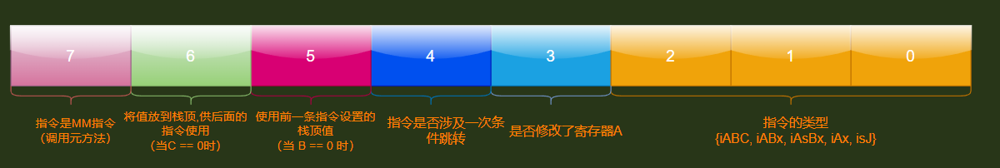
| bit位 | 作用 |
|---|---|
| 0~2 | 指令的类型 也就是这些 {iABC, iABx, iAsBx, iAx, isJ} |
| 3 | 指令是否修改了寄存器A |
| 4 | 判断当前指令是否涉及一次条件跳转 增加这个标记可以用来检测分支指令这一个打的类别, 这样简化了指令集,当遇到跳转指令的时候, 可以回到前一条指令来看看那是否是条件跳转 |
| 5 | 使用前一条指令设置的栈顶值（当 B == 0 时） |
| 6 | 将值放到栈顶,供后面的指令使用（当C == 0时） |
| 7 | 指令是MM指令（调用元方法） |
指令的创建
创建ABCK指令
#define CREATE_ABCk(o,a,b,c,k) ((cast(Instruction, o)<<POS_OP) \
| (cast(Instruction, a)<<POS_A) \
| (cast(Instruction, b)<<POS_B) \
| (cast(Instruction, c)<<POS_C) \
| (cast(Instruction, k)<<POS_k))
创建ABx指令
#define CREATE_ABx(o,a,bc) ((cast(Instruction, o)<<POS_OP) \
| (cast(Instruction, a)<<POS_A) \
| (cast(Instruction, bc)<<POS_Bx))
创建Ax指令
#define CREATE_Ax(o,a) ((cast(Instruction, o)<<POS_OP) \
| (cast(Instruction, a)<<POS_Ax))
创建sJ指令
#define CREATE_sJ(o,j,k) ((cast(Instruction, o) << POS_OP) \
| (cast(Instruction, j) << POS_sJ) \
| (cast(Instruction, k) << POS_k))
可以发现其实指令的创建都是使用的宏和或运算进行组合,而且也是严格按照如下图编码方式创建的
luac命令
luac54 -l Helloworld.lua命令
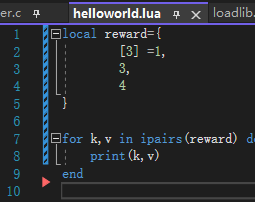
比如我们对这个helloworld.lua使用luac54 -l Helloworld.lua查看指令集命令,可以得到如下信息
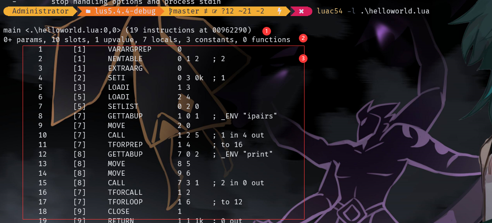
-
1号位置-
第一行如果是
main,说明是编译器给我们添加的主函数,对于主函数起止都是0,对于普通函数就是文件内部的起止行号 -
如果是
function,那就说明是我们自己的定义的普通函数,比如下面写法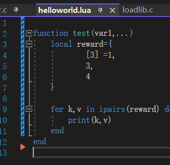
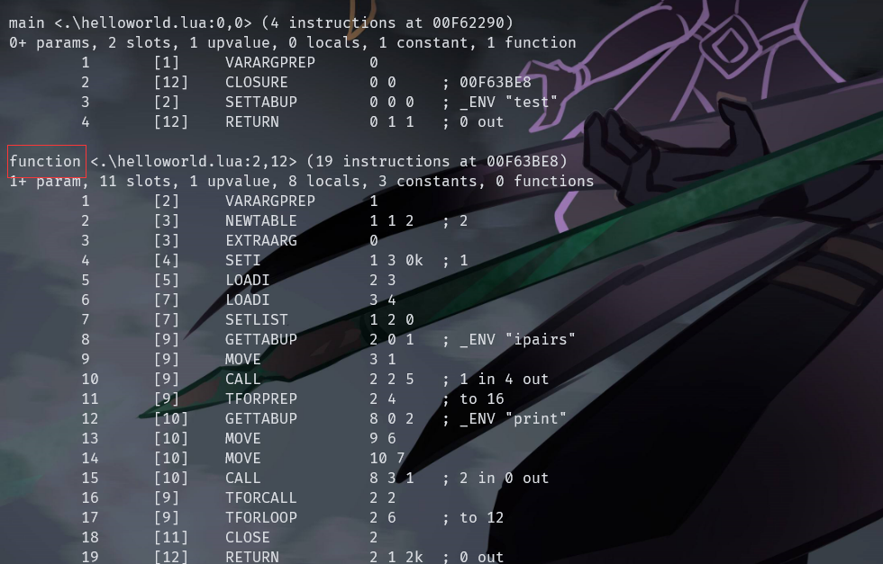
-
这个表示带文件路径的源文件名,和函数在文件中的起止行号
-
表示当前函数的指令个数,函数地址
-
-
2号位置-
表示是固定参数数量,如果有
+号代表是个可变参数函数 - 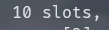 寄存器数量
- 上值数量
- 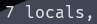 局部变量数量
- 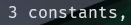 常量数量
- 子函数数量
-
表示是固定参数数量,如果有
-
3号位置下面把每列做什么的都写出来
序号 代码行号 操作码 操作数 注释 1 [1] VARARGPREP 0 2 [1] NEWTABLE 0 1 2 ; 2 3 [1] EXTRAARG 0 4 [2] SETI 0 3 0k ; 1 5 [3] LOADI 1 3 6 [5] LOADI 2 4 7 [5] SETLIST 0 2 0 8 [7] GETTABUP 1 0 1 ; _ENV "ipairs" 9 [7] MOVE 2 0 10 [7] CALL 1 2 5 ; 1 in 4 out 11 [7] TFORPREP 1 4 ; to 16 12 [8] GETTABUP 7 0 2 ; _ENV "print" 13 [8] MOVE 8 5 14 [8] MOVE 9 6 15 [8] CALL 7 3 1 ; 2 in 0 out 16 [7] TFORCALL 1 2 17 [7] TFORLOOP 1 6 ; to 12 18 [9] CLOSE 1 19 [9] RETURN 1 1 1k ; 0 out操作数那一列中的每一小列就是如下图除开
0p(7)剩下的对应操作模式bit位的分布
比如上面的第一行
1 [1] VARARGPREP 0指令对应的是iAx操作数模式,所以他只有一个参数0
luac54 -l -l Helloworld.lua
通过这个命令除了luac54 -l Helloworld.lua命令内容外,还能把常量表,局部变量表和 upvalue 表的信息打印出来
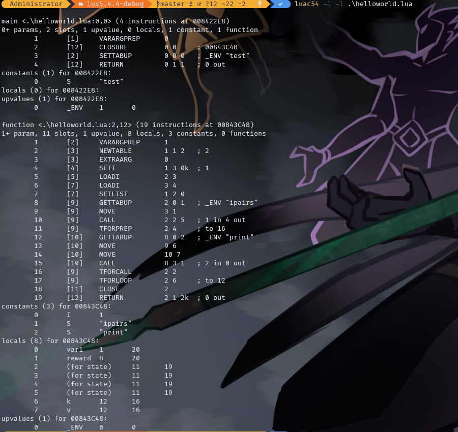
main <.\helloworld.lua:0,0> (4 instructions at 008422E8)
0+ params, 2 slots, 1 upvalue, 0 locals, 1 constant, 1 function
1 [1] VARARGPREP 0
2 [12] CLOSURE 0 0 ; 00843C48
3 [2] SETTABUP 0 0 0 ; _ENV "test"
4 [12] RETURN 0 1 1 ; 0 out
constants (1) for 008422E8:
0 S "test"
locals (0) for 008422E8:
upvalues (1) for 008422E8:
0 _ENV 1 0
function <.\helloworld.lua:2,12> (19 instructions at 00843C48)
1+ param, 11 slots, 1 upvalue, 8 locals, 3 constants, 0 functions
1 [2] VARARGPREP 1
2 [3] NEWTABLE 1 1 2 ; 2
3 [3] EXTRAARG 0
4 [4] SETI 1 3 0k ; 1
5 [5] LOADI 2 3
6 [7] LOADI 3 4
7 [7] SETLIST 1 2 0
8 [9] GETTABUP 2 0 1 ; _ENV "ipairs"
9 [9] MOVE 3 1
10 [9] CALL 2 2 5 ; 1 in 4 out
11 [9] TFORPREP 2 4 ; to 16
12 [10] GETTABUP 8 0 2 ; _ENV "print"
13 [10] MOVE 9 6
14 [10] MOVE 10 7
15 [10] CALL 8 3 1 ; 2 in 0 out
16 [9] TFORCALL 2 2
17 [9] TFORLOOP 2 6 ; to 12
18 [11] CLOSE 2
19 [12] RETURN 2 1 2k ; 0 out
constants (3) for 00843C48:
序号 常量名类型 常量名
0 I 1
1 S "ipairs"
2 S "print"
locals (8) for 00843C48:
序号 变量名字 起始指令序号 终止指令序号
0 var1 1 20
1 reward 8 20
2 (for state) 11 19
3 (for state) 11 19
4 (for state) 11 19
5 (for state) 11 19
6 k 12 16
7 v 12 16
upvalues (1) for 00843C48:
序号 upvalue名 指明这个上值存在哪里 指明这个上值存在位置的索引
1:表示在栈中创建存在上层函数的局部变量表中 如果位置是在栈中在上层函数的局部变量表中的索引
0:表述不在栈中在上层函数的upvalues列表中 如果不是栈中,那么就在上层函数的upvalues表中的索引
0 _ENV 0 0